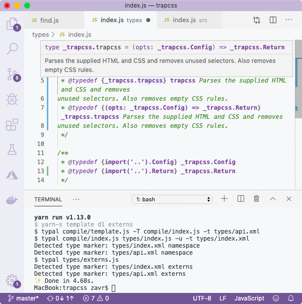
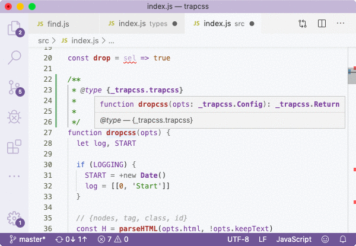

This *types/index.js* file is only used for development purposes, and it's real aim is to provide an annotated function type that is then imported in the source code. We come back to the source code, find our implementation and annotate it with the type: ```js // src/index.js // adding @type /** * @type {_trapcss.trapcss} */ function dropcss(opts) { let log, START if (LOGGING) { START = +new Date() log = [[0, 'Start']] } // ... implementation } ``` Make sure to remember to copy across that typedef with import: ```js /** * @suppress {nonStandardJsDocs} * @typedef {import('../types').trapcss} _trapcss.trapcss */ ``` The *@suppress* is needed because Closure Compiler cannot parse imports in typedefs, so that we skip this warnings. However, this function type is also generated in externs which are fed to the Compiler when compiling packages, so that it will be aware of the type. When using namespaces, we need to be consistent with their namings: if we simply imported `trapcss` instead of `_trapcss.trapcss`, we'd receive access to _VSCode_ _JSDoc_, but the compiler wouldn't know about the `trapcss` type without the namespace.
The advantage of such annotation is that the comments will be lost during compilation anyway, so we don't have to waste time maintaining them in the source code itself. If we need to update the API contract, we go to the XML file, make changes there, and generate new annotations and externs using